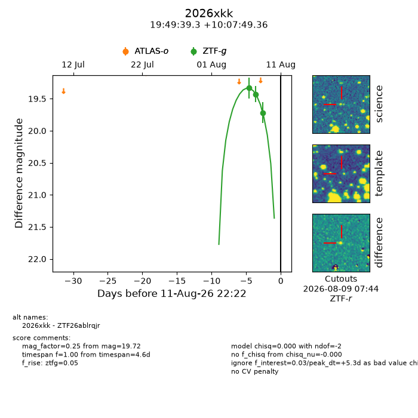
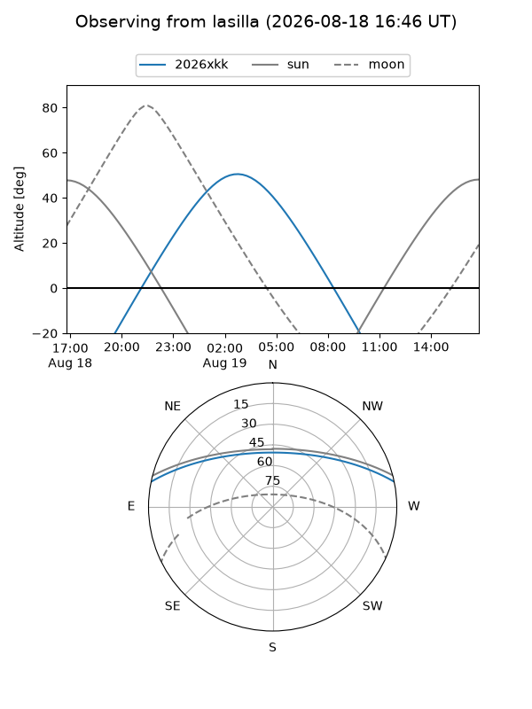
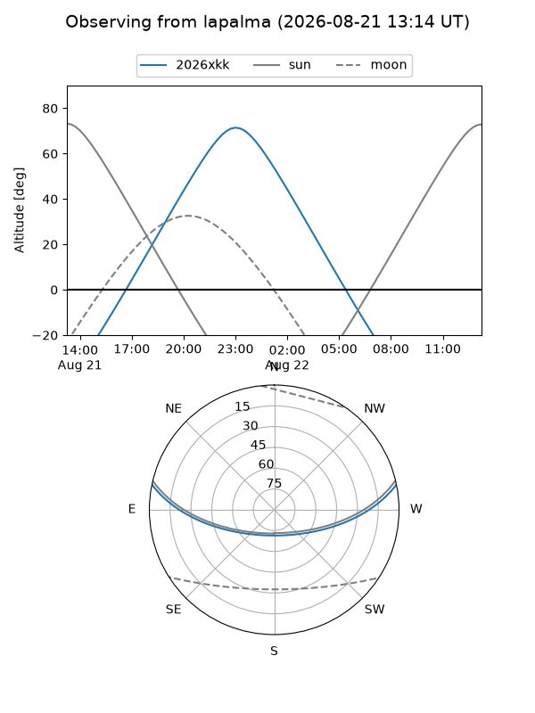
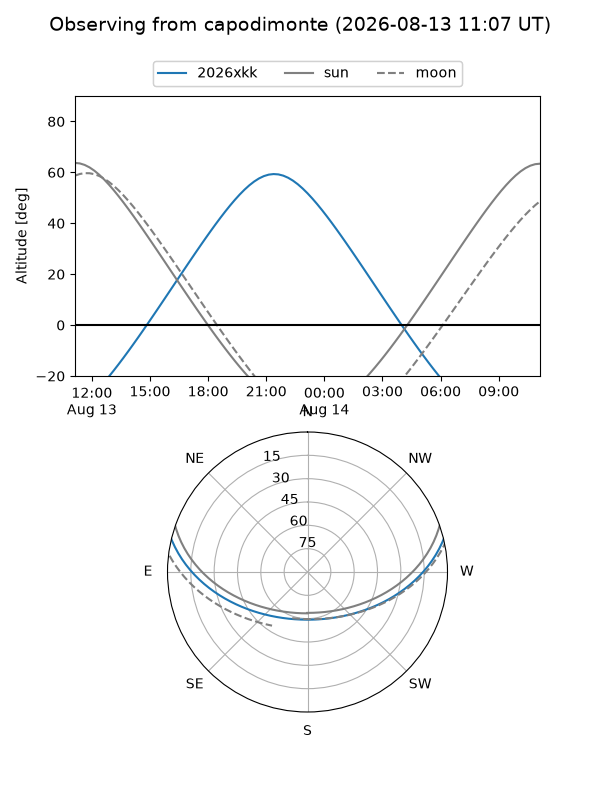
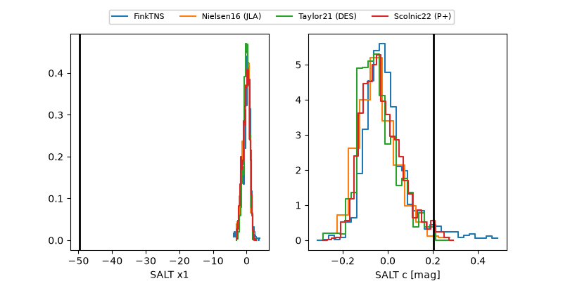

2026xkk
Target 2026xkk at 2026-08-12 10:17
Aliases and brokers:
FINK-ZTF: ztf.fink-portal.org/ZTF26ablrqjr
Lasair-ZTF: lasair-ztf.lsst.ac.uk/objects/ZTF26ablrqjr
ALeRCE-ZTF: alerce.online/object/ZTF26ablrqjr
YSE-PZ: ziggy.ucolick.org/yse/transient_detail/2026xkk
TNS name: wis-tns.org/object/2026xkk
Direct TNS query: direct search
alt names
ZTF26ablrqjr (ztf,fink_ztf)
2026xkk (tns,yse)
Coordinates:
equatorial (ra, dec) = 297.4139,+10.13038
equatorial (HMS+DMS) = 19:49:39.34,+10:07:49.36
galactic (l, b) = (48.7164,-8.04581)
Flags:
TNS type: nan
peak dt: +5.8
Photometry:
last ztfg=19.72
3 ztfg detections
Lightcurve

Visibility



Additional plots
